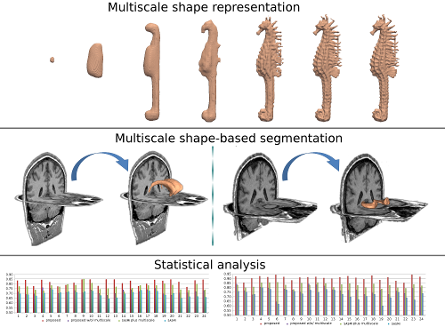
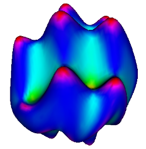
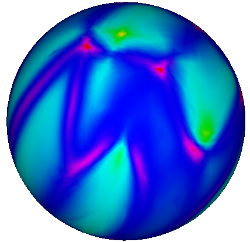
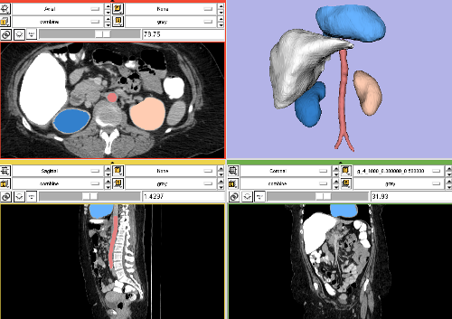
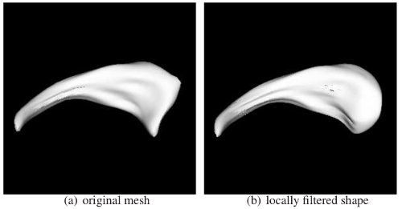

Pillar Two · Open Science
Open Science and Software
"Show me the code." — Linus Torvalds
Contributions to the Open-Source Community
Open science is one of the two pillars of my work. The algorithms and tools developed in my group have been adopted at the core of the world's major open-source medical imaging platforms:
- 3D Slicer — Grow From Seed interactive segmentation has been a core module since 2014; Robust Statistics Segmenter has over 39,000 page accesses.
- Insight Toolkit (ITK) — the Spherical Wavelet filter (5,000+ downloads) and the Conformal Flattening filter (1,700+ downloads) are shipped with the toolkit.
- Open platforms and tools — a computational histopathology platform, the SPoM statistical shape analysis framework (with Docker image), and multi-scale shape representation code.
These tools have been used by researchers and clinicians worldwide and have contributed to advancing medical image computing research.

Statistical Shape Analysis — A Quantitatively Validated Approach
In "Gao Y, Bouix S. Statistical Shape Analysis using 3D Poisson Equation — A Quantitatively Validated Approach. Medical Image Analysis, vol. 30, pp. 72–84, 2016":
- We proposed a new statistical shape analysis / morphometry technique based on the 3D Poisson equation.
- We proposed a quantitative evaluation framework for morphometry / shape analysis methods.
- To the best of our knowledge, this is the first quantitative morphometry evaluation framework, and the proposed method is the first morphometry technique that is systematically and quantitatively validated.

Multi-scale Shape Representation & 3D Wavelet Transformation
In "Gao Y, Corn B, Schifter D, Tannenbaum A. Multiscale 3D shape representation and segmentation with applications to hippocampal/caudate extraction from brain MRI. Medical Image Analysis, vol. 16, no. 2, pp. 374–385, 2012":
- We proposed a multi-scale shape decomposition and reconstruction for 3D shapes of arbitrary topology.
- As a by-product, we release code for performing 2D and 3D wavelet transforms on ITK images.


Conformal Flattening: Map a VTK Surface to a Sphere
Given a genus-0 surface (a closed surface with no holes and no handles), this filter maps the surface to a sphere while preserving angles. It is based on the paper "On the Laplace-Beltrami operator and brain surface flattening" by Angenent, Haker, Tannenbaum and Kikinis (IEEE TMI). The implementation is shipped with the Insight Toolkit, and is detailed in Gao Y, Melonakos J, Tannenbaum AR. Conformal Flattening ITK Filter. MICCAI Open Science Workshop / Insight Journal, 2006.
- The code here improves on the published version: more coherent with the ITK framework (contribution of Dr. Alexandre Gouaillard), a preconditioned conjugate gradient solver for significant speed-up, and a more even distribution of points on the sphere.
- Compared with the code in ITK 3.20, it has tighter convergence criteria and better results; these changes were adopted in ITKv4.

Grow From Seed: Interactive 3D Segmentation Based on Local Statistics
An end-user oriented, interactive 3D image segmentation tool fully integrated into 3D Slicer. Since 2014, it has been a core interactive segmentation component of 3D Slicer, the world's largest open-source medical image computing software platform.
"Gao Y*, Chen X, Yang Q, Lasso A, Kolesov I, Pieper S, Kikinis R, Tannenbaum A, Zhu L*. An effective and open source interactive 3D medical image segmentation solution. Scientific Reports. 2024; 14:29878."
Key features:
- User-friendly interactive segmentation with minimal input (just a few strokes)
- Real-time 3D segmentation feedback
- Integrated into 3D Slicer as a core module
- Used by researchers from multiple countries in research and clinical experiments
- Supports MRI, CT, and ultrasound
Impact: widely adopted in the medical imaging research community and used in clinical research worldwide. 3D Slicer is jointly developed by universities and research institutes from the US, Germany, UK, Japan, Canada and other countries over more than ten years, with NIH funding exceeding $30 million.
A Bank of Shapes for Validating Statistical Shape Analysis Methods
In "Gao Y, Riklin-Raviv T, Bouix S. Shape analysis, a field in need of careful validation. Human Brain Mapping. 2014 Oct 1;35(10):4965–78." we proposed a framework for validating statistical shape analysis methods.

Wavelet Transform on the Sphere
- How to perform wavelet analysis on a 2-sphere?
- How can it be applied to localized analysis of a shape?